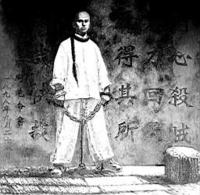

谭嗣同
周润发
张学友
古龙
李敖
剑胆琴心 谭嗣同
1865.3.10-1898.9.28
谭嗣同，字复生，号壮飞，又号华相众生、东海褰(qiān)冥氏、廖天一阁主等。汉族，湖南长沙浏阳人，清末湖北巡抚谭继洵之子，善文章，好任侠，长于剑术。1897年夏秋间，写成重要著作《仁学》。他认为物质性的“以太”是世界万物存在的基础，世界万物处于不断运动变化之中，而变化的根源在于事物的“好恶攻取”、“异同生克”。他把“以太”的精神表现规定为“仁”，而“仁”的内容是“通”，“通之象为平等”，“仁―通―平等”是万物的发展法则，是不可抗拒的规律。后人将其著作编为《谭嗣同全集》。
1898年参加戊戌变法，变法失败后，梁启超力劝谭嗣同出走，谭曰：“不有行者无以图将来，不有死者无以酬圣主。”京师大侠王五复劝谭嗣同改变初衷，谭掷地有声：“各国变法无不以流血而成。今日中国未闻有因变法而流血者，此国之所以不昌也。有之，请自嗣同始！”就义的那天，谭君慷慨激昂，神情没有丝毫改变。当时军机大臣刚毅监崭，谭君喊刚毅上前来说：“我有句话……”，刚毅走开不听，于是从容就义。同时被害的维新人士还有林旭、杨深秀、刘光第、杨锐、康广仁。六人并称“戊戌六君子。
狱中题壁
望门投止思张俭，忍死须臾待杜根。
我自横刀向天笑，去留肝胆两昆仑！
有心杀贼，无力回天，
死得其所，壮哉，壮哉！
张学友，1961年7月10日生于香港；身高：1.74米，性格随和，被大家称作“好好先生”。
1984年凭着一曲《大地恩情》，从20,000余名参赛者中脱颖而出，获得首届十八区业余歌唱大赛的冠军,其后他与宝丽金唱片公司签约成为旗下歌手.
1993年推出第二张国语唱片《吻别》，在台湾、新加坡、中国大陆以及其他海外市场大热，亦打破多个地方的唱片历史最高销量，令张学友得到“歌神”的封号，2007年8月，他所举办的学友光年世界巡回演唱会在世界各地举行共105场，再破他的演唱会场数纪录。
共出演60多部电影，并曾在2002年获得印度新德里国际电影节的“最佳男主角”，另分别于1988年和1990年获得香港电影金像奖和台湾电影金马奖的“最佳男配角”，并曾多次在香港电影金像奖和金马奖上提名最佳男主角和男配角。他的戏路广泛，可饰演动作片、喜剧、文艺片、正反派等角色，且片酬不高，所以又被许多香港电影界人士称为“最具价值性”和“最物美价廉”的实力派演员。

古龙，原名熊耀华，著名武侠小说家。约1937年生，祖籍江西，幼年迁居台湾。父母离异后，古龙以半工半读和朋友资助的方式继续学业，后肄业于淡江大学（英文专业）。
古龙很早就尝试电影与文学的互动，如将蒙太奇笔法及结构运用到武侠小说，开辟了武侠创作的新天地；
1985年，病中的古龙因再次酗酒导致食道破裂，使原本就欠佳的身体雪上加霜，最终借酒解脱，于9月21日走完了他多姿多彩的传奇人生，享年48岁。
李敖(1935年4月25日—)，男，字敖之，思想家，自由主义大师，国学大师，中国近代史学者，时事批评家，台湾作家，历史学家，诗人；台湾无党派人士，曾任台湾“立法委员”，2008年任满，宣布退出台湾政坛。因其文笔犀利、批判色彩浓厚，嬉笑怒骂皆成文章，所以自诩为“中国白话文第一人”。